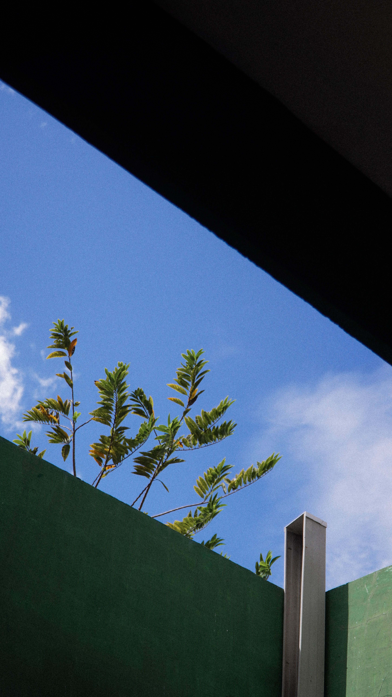

En este artículo
Introducción
Aprende a identificar problemas de drenaje en el jardín, mejorar el suelo y gestionar el exceso de agua con soluciones seguras.
Antes de aplicar cualquier cambio conviene observar las condiciones reales y definir qué problema se quiere resolver. Esta planificación permite evitar soluciones genéricas, compras innecesarias y rutinas difíciles de mantener.
La guía está organizada en tres bloques prácticos para conservar la misma estructura editorial de Casa & Jardín: un primer paso de diagnóstico, un segundo bloque de aplicación y un tercero de mantenimiento y prevención.
Las recomendaciones deben adaptarse al espacio, al clima y a las instrucciones de fabricantes o profesionales cuando corresponda. En tareas técnicas o de riesgo, la seguridad siempre tiene prioridad.
Identifica la causa del agua acumulada
Un charco persistente después de la lluvia indica que el agua no está infiltrando o saliendo al ritmo necesario. Antes de cavar zanjas o añadir grava, observa exactamente dónde se acumula, cuánto tarda en desaparecer y desde qué zona llega. Una solución eficaz depende de conocer la causa.
El suelo arcilloso drena lentamente, pero no es la única causa. La compactación por maquinaria, tránsito o construcción puede reducir la infiltración incluso en suelos diferentes. También puede existir una capa endurecida bajo la superficie que impide que el agua profundice.
Revisa canalones y bajantes. Una bajante que descarga junto a un macizo puede concentrar cientos de litros en un punto durante una tormenta. Antes de modificar su salida, comprueba normativa local y asegúrate de no dirigir el agua hacia la propiedad vecina.
Las pendientes influyen. Una zona baja recibe agua de superficies cercanas y puede permanecer mojada aunque su suelo sea razonable. Si el terreno se inclina hacia la vivienda, el problema merece atención profesional porque puede afectar cimientos.
Observa el drenaje después de distintos tipos de lluvia. Una tormenta breve y muy intensa produce un comportamiento diferente a varias horas de lluvia moderada. Fotografiar los charcos y anotar cuánto tardan en desaparecer ayuda a evaluar cualquier mejora posterior.
Antes de excavar, localiza tuberías, cables y servicios enterrados. No instales drenajes profundos ni plantes árboles grandes sin conocer qué existe bajo el terreno. Las empresas de servicios locales pueden indicar procedimientos para localizar instalaciones.
Si existe agua en sótanos, erosión fuerte, grietas o muros de contención afectados, no trates el problema únicamente como jardinería. Estas señales pueden implicar riesgos estructurales y requieren evaluación profesional.
Consejo práctico
Aplica los cambios de forma gradual, observa el resultado durante varios días y corrige solo aquello que realmente lo necesite. Este método facilita identificar qué decisión funciona mejor y evita intervenciones innecesarias.
Mejora la estructura del suelo y las zonas de plantación
En suelos compactados, una aireación realizada en el momento correcto puede aumentar la infiltración. Evita trabajar arcilla cuando está saturada, porque pisarla o labrarla mojada puede empeorar la compactación.

Incorporar materia orgánica bien descompuesta de forma gradual puede mejorar la estructura del suelo. Compost maduro y otros materiales apropiados ayudan a crear agregados y poros. No añadas grandes cantidades de arena a una arcilla sin una recomendación técnica, porque algunas proporciones generan una mezcla todavía más densa.
Los bancales elevados son útiles para especies sensibles al exceso de humedad. Deben construirse con una mezcla adecuada y permitir salida del agua. Un cajón elevado sobre una base impermeable puede seguir encharcándose.
El acolchado protege la superficie y reduce compactación por lluvia, pero no debe formar una capa excesiva junto a troncos. Mantén espacio alrededor de tallos y utiliza un material apropiado para la plantación.
En zonas naturalmente húmedas, considera plantas adaptadas. Intentar cultivar especies de suelo seco en un punto que recibe agua constantemente exige drenajes, riego contradictorio y más mantenimiento. Las plantas tolerantes pueden transformar un problema en una característica del jardín.
Los caminos y patios modifican el recorrido del agua. Una superficie impermeable nueva puede enviar escorrentía a un macizo que antes permanecía seco. Revisa bordes y pendientes después de cualquier obra exterior.
Las superficies permeables permiten infiltración cuando su base también está diseñada para ello. Colocar adoquines permeables sobre una capa compacta e impermeable limita el beneficio. El sistema completo debe permitir que el agua se mueva hacia una salida o almacenamiento seguro.
¿Qué debemos tener en cuenta?
Aplica los cambios de forma gradual, observa el resultado durante varios días y corrige solo aquello que realmente lo necesite. Este método facilita identificar qué decisión funciona mejor y evita intervenciones innecesarias.
Instala drenajes solo cuando sean realmente necesarios
Un dren francés utiliza una zanja con material filtrante y tubería perforada para recoger y conducir agua. No funciona correctamente si el tubo no tiene pendiente o una salida autorizada. Un drenaje sin destino simplemente traslada el charco a otro punto.
Los jardines de lluvia pueden recibir temporalmente agua de tejados y superficies, utilizando plantas adaptadas a periodos húmedos y secos. Necesitan dimensionamiento según área de captación, suelo y lluvia local. No deben colocarse arbitrariamente junto a cimientos.
Los depósitos de lluvia permiten almacenar parte del agua para riego posterior donde esté permitido. Un depósito lleno pesa mucho: mil litros equivalen aproximadamente a una tonelada. Necesita una base segura y un rebosadero dirigido a un lugar apropiado.
Los pozos de infiltración pueden estar regulados y no funcionan en todos los suelos. Si el nivel freático es alto o el terreno drena muy lentamente, podrían ser ineficaces. Consulta normativa y un profesional antes de construir uno.
Mantén rejillas, canales y salidas existentes libres de hojas y sedimentos. A veces un sistema que funcionaba bien pierde capacidad simplemente por obstrucción. Después de tormentas fuertes, una inspección rápida puede evitar que el problema reaparezca.
Protege raíces de árboles durante cualquier excavación. Cortar raíces importantes para instalar una tubería puede debilitar o desestabilizar un árbol. Si el trazado pasa cerca de ejemplares maduros, consulta a un arborista.

Después de realizar cambios, observa varias lluvias y ajusta el riego. Un suelo que ahora drena mejor puede necesitar una frecuencia diferente. El objetivo no es secar el jardín, sino mantener suficiente aire y humedad en la zona de raíces mientras los excedentes encuentran una salida segura.
Recomendaciones prácticas
Aplica los cambios de forma gradual, observa el resultado durante varios días y corrige solo aquello que realmente lo necesite. Este método facilita identificar qué decisión funciona mejor y evita intervenciones innecesarias.
Detalles técnicos y mantenimiento del sistema
Una prueba de infiltración sencilla puede orientar, pero sus resultados dependen de profundidad, humedad previa y tipo de suelo. Para obras importantes, un profesional puede realizar ensayos más fiables y dimensionar una solución con datos reales.
Evita crear pendientes excesivas que aceleren el agua y provoquen erosión. Cuando la escorrentía gana velocidad puede arrastrar suelo, acolchado y grava. Vegetación, terrazas y pequeños cambios de nivel pueden reducir esa energía cuando se diseñan correctamente.
Las raíces de árboles maduros no deben cortarse para instalar una zanja sin evaluación. Excavar cerca de un árbol puede afectar su estabilidad y salud. Si el trazado de un drenaje atraviesa la zona radicular, consulta a un arborista.
Si el problema apareció después de instalar un patio, camino o ampliación, revisa cómo esa superficie cambió el recorrido del agua. Las zonas impermeables concentran escorrentía y pueden necesitar canales, bordes o una salida planificada.
Los canalones deben mantenerse limpios. Una bajante desbordada puede saturar el suelo junto a la vivienda. Para trabajos en altura utiliza sistemas seguros o contrata mantenimiento profesional; no arriesgues una caída por intentar limpiar rápidamente.
En céspedes, la compactación por tránsito puede producir charcos localizados. Redirigir recorridos, airear cuando corresponde y mejorar el suelo puede ser más razonable que instalar tuberías profundas.
Si utilizas geotextil en un drenaje, selecciona un material apropiado. Una tela incorrecta puede obstruirse con sedimentos o impedir el movimiento del agua. Los sistemas bien diseñados consideran tubería, grava, filtro y pendiente como un conjunto.
No plantes árboles grandes sobre drenajes enterrados sin estudiar su desarrollo radicular. Las raíces pueden aprovechar humedad y entrar en sistemas dañados. Planifica distancias según la especie y el tipo de instalación.
Durante una obra, protege suelo desnudo de lluvias fuertes. La erosión puede llenar un drenaje nuevo con sedimentos antes de terminar. Mantén entradas cubiertas o utiliza medidas temporales de control.
En climas con heladas, profundidad y diseño necesitan considerar congelación. En regiones tropicales con lluvias muy intensas, el dimensionamiento debe manejar grandes caudales. Copiar una solución de otro clima puede producir un sistema insuficiente.

Después de mejorar el drenaje, ajusta el riego. Un suelo que ahora evacua agua más rápido puede necesitar otro calendario. El objetivo sigue siendo mantener humedad suficiente para las plantas sin saturar raíces.
Documenta cada cambio con fotografías. Comparar el mismo punto después de varias lluvias permite saber si la solución realmente redujo el tiempo de encharcamiento o simplemente desplazó el agua a otra zona.
Detalles adicionales para mantener el resultado
Si tienes zonas de grava, comprueba que no estén cubriendo una capa compactada que impida la infiltración. La grava superficial puede ocultar charcos durante un tiempo, pero el agua seguirá acumulándose bajo ella si la base no tiene salida.
Los bordes de hormigón, muros bajos y cimentaciones de cobertizos también pueden actuar como barreras al flujo. Observa si los charcos se forman justo junto a estos elementos. A veces una pequeña modificación del recorrido resuelve más que excavar una zanja larga.
En suelos nuevos de una obra, es frecuente encontrar capas de relleno y escombros bajo la tierra vegetal. Estos materiales pueden crear zonas con drenaje irregular. Si sospechas que existe una barrera enterrada, una evaluación profesional evita excavar a ciegas.
Las plantas no deben utilizarse como única solución para absorber grandes volúmenes de agua. Aunque especies de zonas húmedas toleran saturación y ayudan a estabilizar suelo, no pueden compensar una bajante descargando cientos de litros junto a una pared.
En una pendiente, pequeñas terrazas vegetadas pueden ralentizar escorrentía. Deben diseñarse para no concentrar agua detrás de muros improvisados. Cualquier estructura que retenga terreno necesita estabilidad suficiente y, en muchos casos, drenaje propio.
Las salidas de los drenajes deben permanecer visibles y accesibles para inspección. Si una tubería termina enterrada sin posibilidad de limpieza, una obstrucción futura será difícil de localizar. Arquetas y puntos de registro facilitan mantenimiento.
Durante periodos secos, no olvides que un sistema de drenaje puede cambiar la disponibilidad de agua. Algunas plantas que antes aprovechaban humedad acumulada pueden secarse más rápido. Ajusta riego solo después de observar el nuevo comportamiento.
Si el jardín comparte cotas con vecinos, cualquier modificación de nivel debe hacerse con cuidado. Elevar tu terreno puede empujar agua hacia otra propiedad. Las soluciones deben respetar límites legales y evitar transferir el problema.
Un profesional puede ayudarte a calcular caudal a partir del área de tejado o superficie impermeable. Este cálculo es importante para dimensionar tuberías y depósitos. Un sistema demasiado pequeño puede funcionar en lluvias normales y fallar durante una tormenta fuerte.
El mantenimiento preventivo debe formar parte del proyecto desde el inicio. Limpiar rejillas, retirar sedimentos, revisar tuberías y observar erosión después de lluvias intensas prolonga la vida del sistema y evita descubrir fallos cuando el terreno ya está saturado.
Preguntas frecuentes
¿Cómo sé si mi jardín tiene mal drenaje?
Charcos que permanecen mucho tiempo, suelo saturado, raíces dañadas y zonas de barro persistente son señales frecuentes.
¿Añadir arena mejora siempre un suelo arcilloso?
No. En proporciones inadecuadas puede empeorar la estructura. Es preferible evaluar el suelo y utilizar enmiendas apropiadas.
¿Qué es un dren francés?
Es una zanja con material filtrante y tubería que recoge agua y la conduce hacia una salida segura y autorizada.
¿Puedo dirigir el agua hacia la calle o al vecino?
No debes hacerlo sin confirmar normativa. La gestión de aguas pluviales está regulada y no debe causar daños a otras propiedades.
¿Cuándo necesito un profesional?
Cuando hay agua cerca de cimientos, humedad interior, erosión importante, muros afectados o trabajos profundos cerca de instalaciones.
Conclusión
Cómo mejorar el drenaje del jardín para evitar el exceso de agua funciona mejor cuando las decisiones responden a las condiciones reales del espacio y pueden mantenerse con una rutina sencilla.
La constancia suele ofrecer mejores resultados que las intervenciones intensas realizadas solo cuando aparece un problema. Revisar, limpiar y ajustar a tiempo evita trabajo acumulado.
Si una tarea implica riesgo, instalaciones, estructura o un problema que no puedes identificar, consulta a un profesional cualificado antes de continuar.
Con planificación, observación y mantenimiento preventivo es posible conseguir un resultado más cómodo, funcional y duradero.